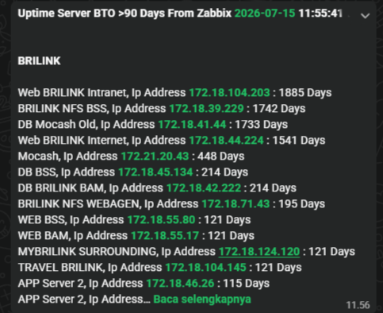

Featured Projects



I am an IT professional experienced in designing, configuring, and maintaining server and network infrastructures across local and cloud environments. I enjoy solving complex problems and automating routine tasks.
Currently, I am actively diving deeper into microservices-based system architecture, large database query optimization, and leveraging analytics dashboards for real-time server health metrics visualization.
Handled office administration tasks while providing comprehensive IT support for computer networks and other technical issues. Additionally, served as media support responsible for documenting company events and activities.
Was placed at the BRI Data Center as part of the application operations team. Besides managing the apps, I also handled troubleshooting whenever there was an error. Before fixing a problem, I usually checked the server or database logs to find out what caused it. I also built an internal website to store IDs and passwords it allows the team to copy-paste passwords for internal links and servers easily without actually revealing the text.
